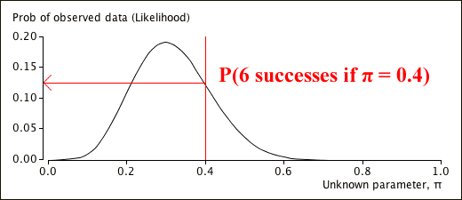

Alternative to the method of moments
The method of moments often provides a good estimator when there is a single unknown parameter, but another general estimation method called maximum likelihood is far more general. It can be used for models with several unknown parameters and even situations in which the available data are not a random sample.
Likelihood function
The joint probability of \(\{X_1, X_2, \dots, X_n\}\) may involve an unknown parameter, \(\theta\).
\[ p(x_1, x_2, \dots, x_n \;| \; \theta) \]For example, if the variables are a random sample from a \(\GeomDistn(\pi)\) distribution, independence means that the joint probability is
\[ P(X_1=x_1 \textbf{ and } X_2=x_2 \textbf{ and } \dots \textbf{ and } X_n=x_n) = \prod_{i=1}^n {\pi (1-\pi)^{x_i-1}} \]The likelihood function is defined from this.
Definition
If random variables \(\{X_1, X_2, \dots, X_n\}\) have joint probability
\[ p(x_1, x_2, \dots, x_n \;| \; \theta) \]then the function
\[ L(\theta \; | \; x_1, x_2, \dots, x_n) \;=\; p(x_1, x_2, \dots, x_n \;| \; \theta) \]is called the likelihood function of \(\theta\).
The likelihood function tells you the probability of getting the data that were observed, for different values of the parameter, \(\theta\). More informally,
\(L(\theta) = Prob(\text{getting the data that were observed})\) if the parameter value was really \(\theta\).
We now give a simple example.
Binomial random variable
If \(X\) is the number of successes in \(n=20\) independent trials, each with probability \(\pi\) of success, its probability function is
\[ p(x \; | \; \pi) = {{20} \choose x} \pi^x(1-\pi)^{20-x} \quad \quad \text{for } x=0, 1, \dots, 20 \]If we observed \(x=6\) successes, this would have probability
\[ p(6 \; | \; \pi) = {{20} \choose 6} \pi^6(1-\pi)^{14} = (38,760) \times \pi^6(1-\pi)^{14} \]The likelihood function treats this as a function of \(\pi\),
\[ L(\pi) \;=\; p(6 \; | \; \pi) \;=\; (38,760) \times \pi^6(1-\pi)^{14} \]The likelihood function gives the probability of getting the data that we observed (6 successes) for different values of \(\pi\). For example, if \(\pi = 0.4\), the probability of observing \(x = 6\) would be 0.124.

From the likelihood function we could also find:
Since there would be such a low probability of observing our actual data if \(\pi\) was 0.1, this throws some doubt on whether this would be the correct value of the parameter \(\pi\).